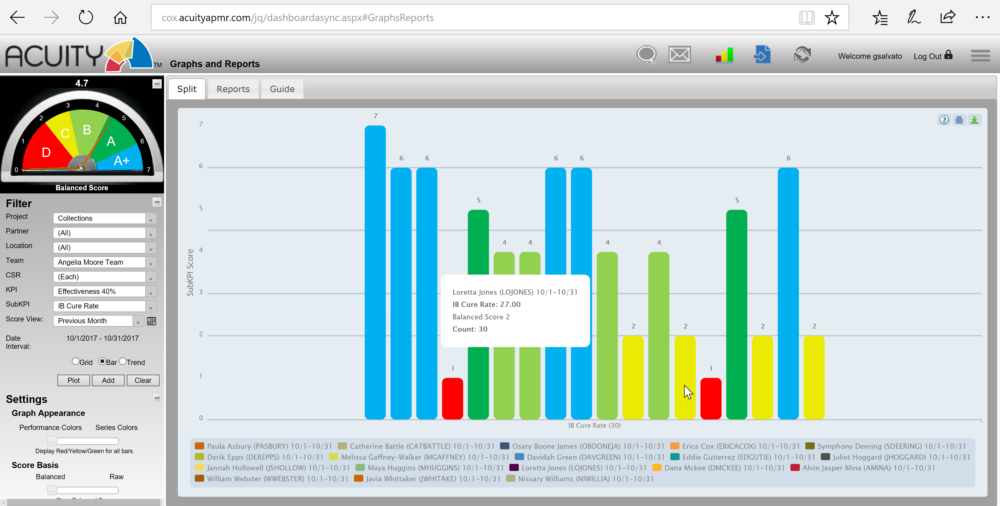

- System Login
- Dashboard Basics
- Sub-KPI Drill-Down
- Communications and Support
- Filters and Views
- Performance Trend Report
- Tabular or “Spreadsheet” Views
- Report Settings
-
Sidekick - - Accessing Sidekick
- The Sidekick Journal
- Adding a Journal Entry
- Performance Trend
- Touch Count / Touch Rank
- Touch Rank
- Trailing Twelve month (TTM) Average - Touch Count / Performance Trend
-
Download Guide (PDF) -
Back to Top
Acuity Performance Management System – Quick Start Guide
Acuity is designed to inform, align, engage and develop agents, mangers and other employees. It’s easy to use and has a range of great features to help you succeed! This guide will help you become familiar with the system and become proficient in its basic operation.
System Login

When you login for the first time (simply enter the user name and password into the appropriate fields as shown in the screen shot above), you will be prompted to change the default password (typically P@ssw0rd) to one of your own (remember it or store it somewhere safe for future reference should you forget it).

At some point during or near the end of training, you should have received a user name and a default password to access Acuity. A special url has been set up for you to access Acuity –
Dashboard Basics
Once logged in to Acuity, a dashboard will display your performance scores (actual data values as well as corresponding performance scores and levels).

The number on the top of the gauge in the upper left section of the filter panel indicates your current overall aka “balanced score” (refreshed at least daily). The gauge is divided into color-coded performance levels and scoring resets with the start of each pay period or other defined basis.
Each KPI for which you are responsible, and that make up the balanced score, is displayed so that you can quickly and easily monitor progress and pinpoint your strengths and areas that require improvement.
The weight (or relative importance) for each KPI is included in the label underneath the bar and positioning the cursor over the bar will also display KPI details.
Sub-KPI Drill-Down
Double-clicking a specific KPI will either render a tabular view of the underlying data or display the sub-KPIs (aka KPI split) that comprise the primary KPI (see screen shot below), enabling the specific area of weakness to be pinpointed with deep granularity.
Communications and Support
If your supervisor has not reached out to you to assist with a weak Key Performance Indicator, reach out to them by using the Chat feature accessible at the top of Acuity.
Communication may also be facilitated via Acuity’s conventional Messaging feature accessible via the envelope icon. A round marker next to the envelope icon will indicate when a new message has been received.
The Acuity Notifier is a small “floating” (meaning it can be moved or positioned anywhere on the desktop) tool bar that keeps you connected when your Acuity dashboard isn’t open on your desktop. Notification of New Messages and other information will be displayed here and clicking the available buttons will launch the relevant module within Acuity.
The Acuity Notifier is a “tray application” and requires that you
provide login credentials (same as you use for Acuity) to enable.
Filters and Views

Filters located in Acuity’s left panel - enabled or disabled based on role - determine what information is displayed in the main report window.
To isolate a specific KPI, use the KPI filter. To view historical performance, select a previous date range from the Score View filter.
TIP: after selecting filters, click the Plot button to run the new or modify the existing report.
Performance Trend Report
To view historical trends of overall or KPI-specific score,
click Trend and set the desired beginning and end dates using the slider.
Tabular or “Spreadsheet” Views
Prefer a tabular view of the data? Select the Grid button and click Search. Or click on a specific KPI bar in the Bar view to invoke a spreadsheet style report.
Report Settings

Acuity Settings allow you to change the report display appearance. Performance Colors reflect KPI performance as calibrated to defined target levels (A/B/C….). The Series Colors options apply a distinct color to each KPI bar.
The Score Basis setting allows you to view overall score or pecific KPI values as either “calibrated” performance scores or Raw data values.
Sidekick - Digital Ally for the Frontline Superhero
Sidekick is an intelligent system for coaching, recognition, review, and performance management integrated with the Acuity contact center performance management platform.
Using Sidekick is Easy…
Accessing Sidekick

- Log into Acuity.
- Select an agent from the CSR (or similar label) drop down.
- Click Sidekick from the menu and it will load in the context of the selected agent.

The Sidekick Journal
The Sidekick Journal provides a place to document all of the interactions, such as coaching, recognition, monitors, goal-setting, etc., between team leaders (aka supervisors, etc.) and their agents. Adding journaling to your regular frontline management routine will ensure that you never have to guess with whom or in what ways you’ve lead and developed your team. The Journal is your reliable digital system of record.
Using the Journal is easy. By default, journal entries are listed in table format by Entry Date (most recent on top). Columns are sortable so that this view can be adjusted as desired.

Adding a Journal Entry
As you prepare to initiate a coaching session or other form of support interaction with an agent, click the blue Add New Record button located in the top right corner of the Journal.
- Fill in the Entry Date (current or past) and Delivered By fields.
- Select a Reason or Category of support type: Coaching, Recognition, Goal-setting, and Call Monitor are defaults, but other options may be presented.
- Enter notes/comments in the Details/Issues and Resolution/Follow-up fields to adequately document the support activity.
- If applicable, specify details for performance Goals in the Set Goal section per the relevant KPI and a date for Follow-up.
- Once the form is complete, click the Submit button and the new entry will appear in the Journal table.
Performance Trend
The Performance Trend displays the day-by-day performance scores by Balanced Score or specific KPI for either the Current or Last Month. The Performance Trend view also includes all of the journal entries recorded that same month. In this way, it’s easy to visualize the impact of your agent support activities. Trend lines display performance for the focus agent as well as the team average. Mouse-over the dots on the black or blue trend lines will display details about the KPI or Balanced Score. Mouse-over the green dots on the x axis will display the summary for the Journal entry. Clicking the green dot will open the full Journal entry.

Touch Count / Touch Rank
Touch Count
Touch Count and Touch Rank reports provide context about the frequency of your interactions with agents and how this routine correlates with performance. Touch Rank looks at three data points:
- This CSR: Mouse-over the black bar shows the number of interactions (“touches”) with the focus agent in the current month. Mouse-over the blue bar shows the average number of touches for the focus agent up to the past six months.
- Team Average: Mouse-over the black bar shows the average number of interactions (“touches”) across all agents on the team. Mouse-over the blue bar shows the average number of touches across all agents on the focus team for up to the past six months.
- All CSRs: Functions just like Team and This CSR, but across all CSRs within the same department, program, or other comparable group.

Touch Rank
Touch Rank displays the number of “touches” and Balanced Score for each of the agents on the specified team. The focus agent is highlighted in red. The second column shows the number of touches (supervisor/team lead support interactions). The third column displays the Balanced Score (total performance score reflective of all weighted KPIs). Each column can be sorted to customize the view or be adjusted by Current and Last Month.
Trailing Twelve Month (TTM) Average - Touch Count/Performance Trend
The Trailing Twelve Month trend chart displays the average Touch Count per agent over the most recent 12 month period. The black line reflects the focus team and the blue line reflects the average across all teams performing the same or similar function. The view can be adjusted to display the Trailing Twelve Month Performance Score (Balanced Score) for the focus (Your) or All Teams using the toggle switch at the top right corner of the chart.

Back to Top